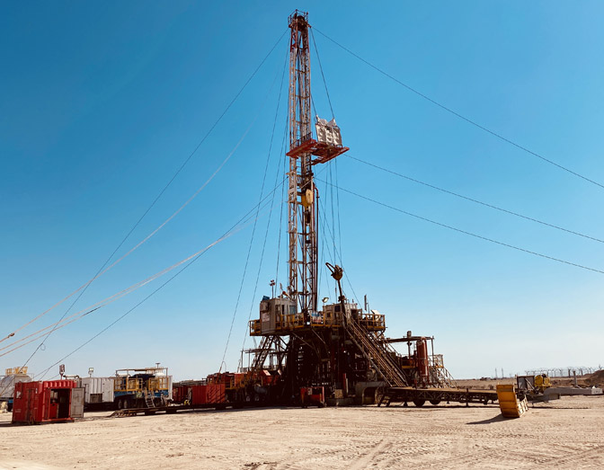

<div class="projects-area ptb-100 pb-70 hth-100" id="projects">
  <div class="container">
    <div class="row">
      <div class="col-md-12">
        <div class="secTitle text-center">
          <span class="info_txt">We Are PetrolLink Holding Company</span>
          <h2 class="text-center mb-4">PROJECTS</h2>
          <span class="info_txt text_hide">  
            
            We provide drilling and workover services for Kuwait Oil Company.

            Current projects with KOC

Supply of pulling units (550 HP)

Supply of workover Rigs(750 HP) for workover operations

We provide our clients with the optimum and latest technology to drill their wells in a safe manner , controlled and optimum environment to ensure that wells are drilled or work over and delivered in best possible standard.
          </span>
        </div>
      </div>
      <div class="col-md-12">
        <div class="slider_container">
          
          <div class="pro_slider">
            <h4> Rig Challenger -1 (CH-1)</h4>
            <div class="col-lg-12"  style=" padding: 0;">
             


              <p style="
                 font-weight:  bold;
                 color: #333;
                 font-size: 18px;
                 margin-bottom: 10px;
                 ">


                  Current projects with KOC
              </p>
              <ul class="arrow-list">
                  <li><p>Supply of pulling units (550 HP)</p> </li>
                  <li><p>Supply of workover Rigs(750 HP) for workover operations</p> </li>
              </ul> 
              <p>
                  We provide our clients with the optimum and latest technology to drill their wells in a safe
                  manner , controlled and optimum environment to ensure that wells are drilled or work over and
                  delivered in best possible standard.
              </p>
          </div>

          

            We provide drilling and workover services for Kuwait Oil Company.

            Current projects with KOC

Supply of pulling units (550 HP)

Supply of workover Rigs(750 HP) for workover operations

We provide our clients with the optimum and latest technology to drill their wells in a safe manner , controlled and optimum environment to ensure that wells are drilled or work over and delivered in best possible standard.
         

          </div>
        </div>
      </div>
    </div>
  </div>